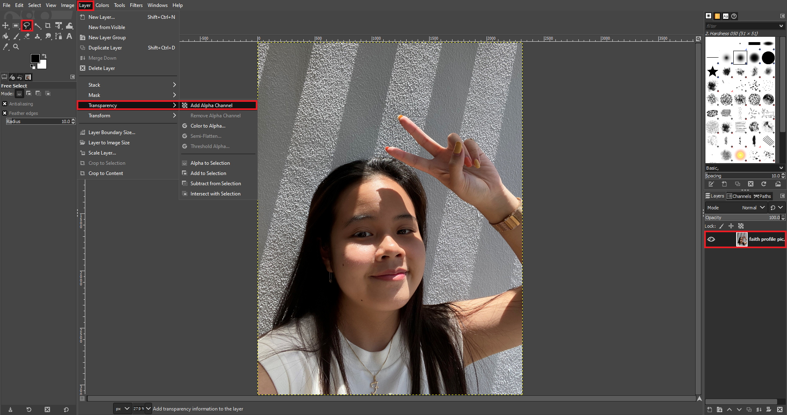
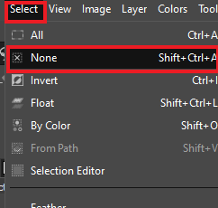
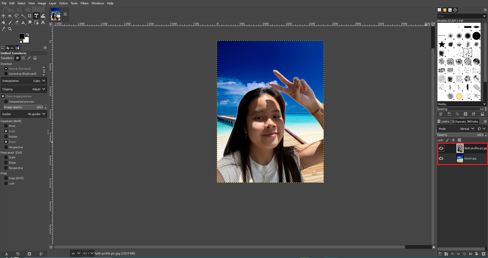

Raster Graphics
What is Raster Graphics?
It deals with pixels on the screen and its used for photographs and images. Uses file formats like .bmp, .jpg, .png. I will be using GIMP a cross-platform image editor and open source raster graphics editor used for image editing, free-form drawing and many more.
Putting Background on a Selfie Image
For this assignment, we were tasked to put choose a background to put on our selfie image.
I picked this background of the beach because I love beaches and it's a place where I get to unwind and enjoy the ocean, the sand and nature itself.

I used the same selfie image I used for my about page.

Removing background from selfie image and make it transparent
I used this video as reference:
Create a new document and go to file > open and find your selfie.
Then go to view > zoom > fit image in window to zoom into the selfie.

Then go to layer > transparency > add alpha channel, your cursor wil now have the free select tool (laso icon) and the selfie image on the right and the text will change from bold to normal text.
Then trace the subject, best to stay a little bit inside the boundaries of the subject.

Then once done, you will see a black and white lines that is moving around the line you have just traced but we need to remove the space (shown in green) inside the object.

Click on the 3rd selection and then trace that space in the subject.

Then click select > feather and feather it 5px then click ok.

Now we wanna remove the background so click on select > invert, the image border should now have the black and white lines moving.

Then go to edit > clear to remove the background. You will see a white background which you need to remove.
Go click on layer > transparency > add alpha channel then press the del key on your keyboard. Now you have a subject with a transparent background.

Click select > none to deselect the selection
Now we want to make the hair look abit more natural, click the smudge tool and make the amendements as shown below. Take note that the bigger the image the bigger the brush size.

Sumdge the edges of the hair to make it look more natural it may not look like much but it makes it look more natural.
Putting beach background on selfie Image
You are ready to put your beach background so go to file > open as layers and then find your beach background image.

Click on the unified transform tool and make sure your background image is selected. Then use the edges to drag it to scale and press Enter.


Move your subject to the top so that its infront of the background image.
Once your done, you can go to file > export as and export in png or jpeg (transparent images without background must be png) then click export a pop up window will come out but just click export.

And this is how your image will look like: